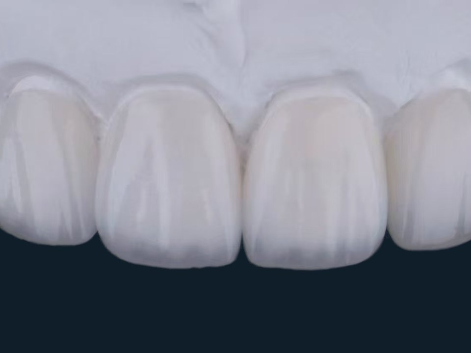
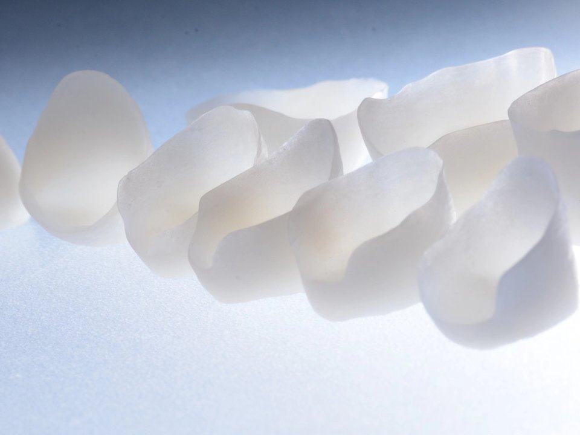
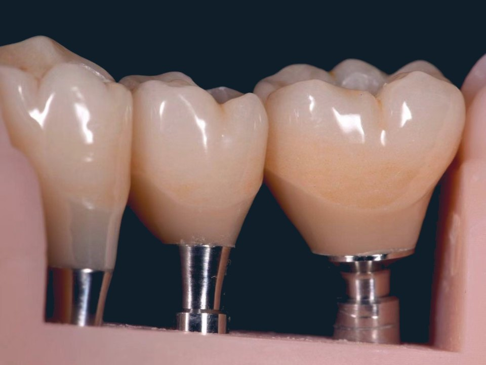
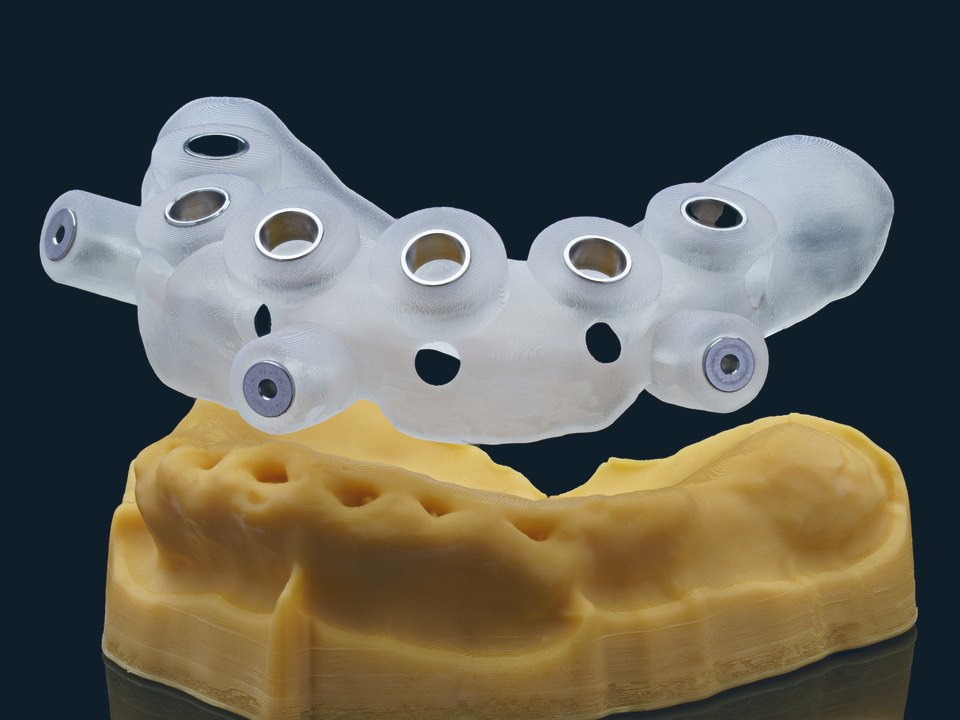

フルマウス再構成
咬耗した歯列や咬合高径の変更を、一つの咬合として計画します。
ユーロ建ての税抜価格です。VAT・輸入費用は含みません。送料は1梱包ごとの実費で、複数の症例を同梱できます。
中国で製作しています。製品は御社の名前で納品され、歯科医院とのお取引は御社のままです。

モノリシックジルコニア。当社チームが設計するか、御社の設計データから製作します。

個別ステインのジルコニア、二ケイ酸リチウム、IPS e.max。

Ti ベース上のジルコニア。スクリュー固定またはセメント固定。

単独歯からフルアーチまで、CBCT とスキャンデータをもとに計画します。執刀医が計画を承認してから、データの出力または印刷を行います。設計データは2–3営業日。スリーブが必要な場合は実費です。

ミシガン型スタビライゼーションスプリント、リポジショニングスプリント、前歯部ディプログラマーを、指示された咬合または下顎位で製作します。
まず御社と一緒に計画し、同じチームが設計・製作します。
症例ごとにお見積りします。
咬耗した歯列や咬合高径の変更を、一つの咬合として計画します。

ガイドとプロビジョナルから最終補綴物まで。

顎関節が関わるリハビリテーションのための、画像に基づく計画。
AxisGuide について設計、ミリング、ステイン、グレーズです。Ti ベース、送料、関税、税金は見積書に別途記載します。
はい。ミリングの前に設計データをお送りし、ご承認いただいてから製作します。
中国で製作しています。補綴物は御社の技工所名で納品されます。
はい。スマイルデザインや診断用ワックスアップなど、設計のみ（METALAB）もご依頼に応じて承ります。
患者名を外し、症例番号を付けてお送りください。CBCT など大きなファイルは、ダウンロードリンクが便利です。